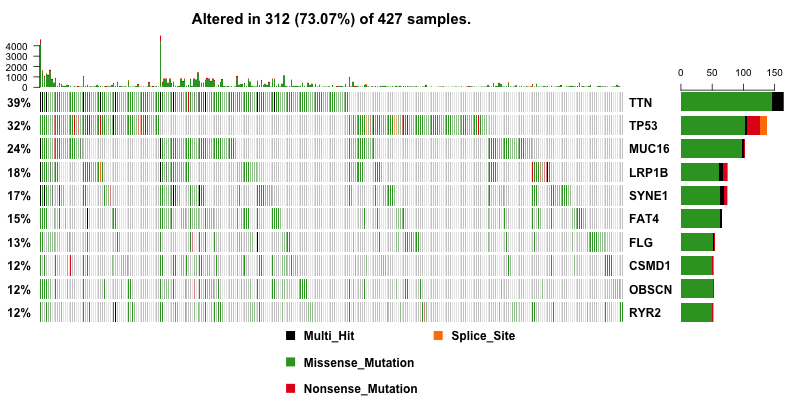

Gene Variation Analysis of Stomach Cancer

文章目录
Background
Cancer is the second leading cause of death globally, and is responsible for an estimated 9.6 million deaths in 2018. Globally, about 1 in 6 deaths is due to cancer.
--World Health Organization
Cancer is the second leading cause of death globally 1. Cancer generally arises when normal cells transform from pre-cancerous lesion to malignant tumour cells. This transformation is a result of the interaction between a person’s genetic factors and three categories of external agents including physical, chemical and biological carcinogens. Cancer mortality can be reduced if cases are detected and treated early.
For stomach cancer in the United States for 2018:
About 26,240 cases of stomach cancer will be diagnosed (16,520 in men and 9,720 in women)
About 10,800 people will die from this type of cancer (6,510 men and 4,290 women)
--The American Cancer Society
Stomach cancer is the world’s third leading cause of cancer-related death 1. It is responsible for an estimated 783, 000 deaths globally in 2018 2. Stomach cancers can be classified as adenocarcinoma, lymphoma, gastrointestinal stromal tumor, carcinoid tumor and other rare cancers. The majority (about 90% to 95%) of stomach cancers are adenocarcinomas 3. Thus, if adenocarcinomas can be further classified into subgroups, it will be beneficial in clinical care: 1. Appropriate screening tests can be developed based on information of each subgroup. 2. Effective treatment can be achieved by better defined drug targets for each subgroup.
Recently, The Cancer Genome Atlas Network (TCGA) obtained gastric adenocarcinoma primary tumour tissue from 295 patients, in order to purse molecular sub-group classification 4. On this tissue whole-exome sequencing, array-based somatic copy number analysis, array-based DNA methylation profiling, messenger RNA (mRNA) sequencing, microRNA sequencing and reverse-phase protein array (RPPA) molecular classification was performed. Unsupervised clustering of the data resulted in 4 subgroups; characterized by EBV-positivity, high microsatellite-instability, genomically stability or chromosomal instability.
Here I explored this TCGA dataset, started with a gene copy number variation analysis for an expanded set (443 patients), identified differentially expressed genes in comparison to normal matched tissues by hierarchical clustering.
Requirements
1 2 3 4 5 |
python: 2.7.10 r: 3.4.2 gistic: 2.0 davweight: -6.8 bioconductor: 3.7 |
Data Wrangling
Mutation Annotation Format Data from TCGA
Mutation Annotation Format (MAF) files are tab-delimited files that contain somatic and/or germline mutation annotations. Variants are discovered by aligning DNA sequences derived from tumor samples and sequences derived from normal samples to a reference sequence. A MAF file identifies, for all samples in a project, the discovered putative or validated mutations and categorizes those mutations (polymorphism, deletion, or insertion) as somatic (originating in the tumor tissue) or germline (originating from the germline). Mutation annotation are also reported 5.
I obtained mutation annotation format data from the Cancer Genome Atlas Network (TCGA) (TCGA.STAD.somaticsniper.6a5e4a85-f398-43b0-89cf-a680fd3737fa.DR-10.0.somatic.maf.gz) and used R package maftools 6 to read MAF files.
|
|
Gene Copy Number Variation Data from TCGA
Copy Number Variations (CNV) refers to a DNA segment of one kilobase (kb) or larger that is present at a different copy number than the reference genome. These insertions, deletions, inversions, and duplications result in changes in the physical arrangement of genes on chromosomes and have been associated with susceptibility or resistance to disease, e.g. cancer 7.
I obtained copy number variation data from TCGA and convert them into appropriate data format:
cnv2seg.py: convert CNV data from TCGA into segmentation file required for GISTIC.
Identify Molecular Subgroups
Molecular Subgroups are identified by initial analysis of the CNV data. I used Genomic Identification of Significant Targets in Cancer (GISTIC) 2.0 8 on Genepattern 9 to perform unsupervised clustering to determine locations of the genome that contain deletion or amplification in gene copy number against refgene Human Hg19. After locations of the genome with CNV was determined, the CNV on individual genes could be inferred. GISTIC tries to overcome the noisy background by focusing in on focal regions of the chromosome.
An appropriate marker file (TCGA.DCC.GenomeWideSNP6.marker.na31.lst.gz) was used. A g-score was assigned for each aberration to indicate the amplitude as well as the frequency of its occurrence for all samples. In addition a q-value was computed, it was used to set the False Discovery Rate (FDR) to 0.05. The underlying affected genes were determined by mapping the locations to a set of genes with the Hg19 chromosomal positions indicated.
|
|
Map Gene List with Biological Meanings
The above technologies results in a huge gene list. To analyze the biological meanings of the output, especially for gene ontology terms, I used the functional annotation tool Database for Annotation, Visualization and Integrated Discovery (DAVID) 10. DAVID is able to map the large gene list with the associated biological features, then the most significantly enriched biological annotations are highlighted within a predefined p-value threshold. While multiple tests are performed here, these p-values are corrected using Benjamini-Hochberg algorithm to allow for it.
gene_amp.py: use focal CNV (regions of repeated genetic information that only span a small proportion <25% of the chromosome arm) to locate the amplified or the deleted genes from the chromosome.
seq2gct.py: prepare gene gluster text file to describe expression dataset from sequence file from GISTIC output.
|
|
gct2cls.py: prepare categorical (cancer vs normal) class file to define phenotype.
|
|
Data Analysis and Visualization
Summarize and Visualize Stomach Cancer TCGA MAF Files
I used R package maftools 6 to summarize, analyze and visualize MAF files.
I first plot the summary of the MAF file. The number of variants in each sample is shown as a stacked barplot and variant types are shown as a boxplot. Most variants are classified as missense mutation. C>T is the major SNV class. TTN is the most mutated genes, and this is not surprising since Titin which is encoded by TTN is a giant protein and third most abundant protein in muscle.
|
|
Then I plot a waterfall plots of MAF file. It is a complex heat map for top ten mutated genes. I would be a good reference for further analysis.
|
|

Gene Copy Number Variation Analysis
CSMD1 and LRP1B are stomach cancer-related gene candidates.
I used python script to visualize the gene copy number variation analysis results. In the genome plot, GISTIC 2.0 copy number variation analysis shows the qvalue against the frequencies of amplification (red) and deletion (blue) in chromosome regions.
I also used maftools package to obtain the bubble plot.
|
|
With copy number data in hand, I can include them into oncoplot to show if any genes are amplified or deleted. And this give us a much more useful result. CSMD1 and LRP1B pop up to the top as deleted genes.
|
|
I also gave a closer look at the top four mutated genes by plotting them in heat map.
|
|
In addition, I obtained a word cloud plot for mutated genes with a minimum mutation number of 30. Size of each gene is proportional to the total number of samples in which it is mutated/altered.
|
|
Many disease causing genes in cancer are co-occurring or show strong exclusiveness in their mutation pattern. So I performed pair-wise Fisher’s Exact test to detect mutually exclusive or co-occurring set of genes with top 25 mutated genes. DNAH9 significantly co-occurs with CSMD1. LRP1B significantly co-occurs with DNAH9, ARID1A, TTN, MUC16, SYNE1, FAT4, FLG and PLEC. TP53 is mutually exclusive with PIK3CA.
|
|
Gene Ontology Analysis
For amplified genes, 2 gene ontology clusters are significant: microtubule polymerization and pathway related to melanoma.
For deleted genes, 4 clusters are significant: sugar binding, taste receptor, GTPase activity and signal peptide.
Further investigation may reveal more details of the relationship between melanoma and gastric cancer.
The Copy Number Variation gave us two list of gene, one with amplification and the other with deletion. I then analyzed 656 amplified genes and 1790 deleted genes using DAVID to identify significantly enriched Gene Ontology terms with a Benjamini-corrected p-value of <0.05. Functional Annotation Chart were generated for the most differentially expressed gene data using default settings. For amplified genes, 2 gene ontology clusters are significant: microtubule polymerization and pathway related to melanoma. For deleted genes, 4 clusters are significant: sugar binding, taste receptor, GTPase activity and signal peptide. It is reasonable that amplification in genes refer to microtubule polymerization is related to cancer. For sugar binding, taste receptor, GTPase activity and signal peptide, they are all related to stomach, which also make sense. For example, taste disorder are quite normal in patients with stomach cancer 11.
However, melanoma is the term that is interesting to look into. In literature, melanoma usually appears in those sites containing melanocytes. Primary and diffuse esophagus-gastrointestinal tract melanoma is rare and most of them are metastatic 12. There is a paper mentioned that the melanoma differentiation associated gene 5 (MDA5) plays a role in Helicobacter pylori infection, which is related to gastric disease 13. Thus, further investigation may reveal more details of the relationship between melanoma and gastric cancer.
Reference
- http://www.who.int/news-room/fact-sheets/detail/cancer [return]
- https://www.cancer.org/cancer/stomach-cancer/about/key-statistics.html [return]
- https://www.cancer.org/cancer/stomach-cancer/about/what-is-stomach-cancer.html [return]
- TCGA Network (2014). Nature. 513(7517), 202–209 [return]
- https://docs.gdc.cancer.gov/Encyclopedia/pages/Mutation_Annotation_Format/ [return]
- Mayakonda, A. (2016). bioRxiv [return]
- Clancy S. (2008). Nature Education. 1(1), 95 [return]
- Mermel CH. (2011). Genome Biology. 12(4), R41 [return]
- Reich M. (2006). Nature Genetics. 38(5), 500-501 [return]
- Huang DW. (2009). Nature Protocol. 4(1), 44-57 [return]
- Epstein JB. (2010). Oral Oncology. 46(2), 77-81 [return]
- Eddekkaoui H. (2014). Bulltin of Cancer. 101(6), 637-40 [return]
- Tatsuta T. (2012). Journal of Clinical Pathology. 65(9), 839-43 [return]
文章作者 ziyunch
上次更新 2018-10-17